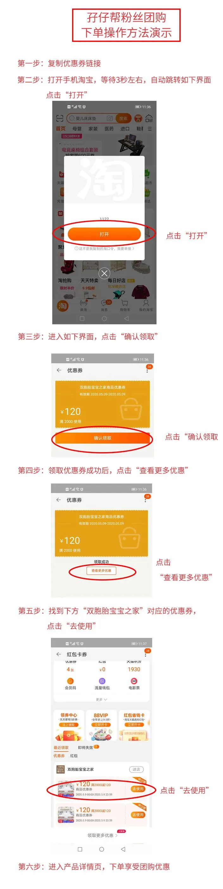
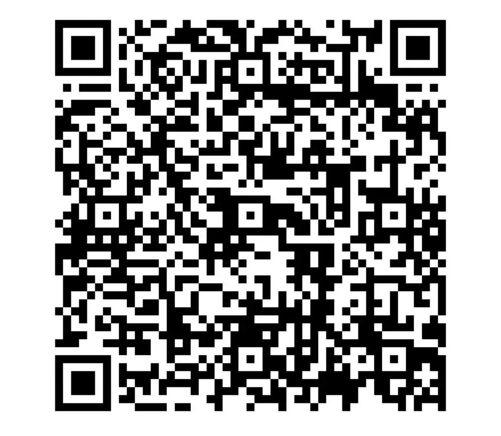

孖仔帮
公众号ID：twinsbang
关注
[SVG Icon]
[SVG Icon]
【帮主圆圈妈妈】：终于等到返团日，整整被催了3个月，从截团那天就开始了。开团前先自我反思下，因为小助手那边收到许多吐槽：为何上一期开团要这样来无踪，去无影，还没反应过来就截团了。
额，这事得怪我，原因如下：
第一，上一期的团购时间比较仓促，受疫情影响，许多地方都暂停发货，2月份那会儿正是风口浪尖的时刻，也不知道未来形势如何，是否能控制住，人心惶惶的状态下，买买买的欲望不是很强烈，等到发现优惠时，已经截团了。
第二，宣传不到位，平时我都会在群里和朋友圈发布推文信息，结果公号文章刚推送没多久，团购群就满员了，咨询的人特别多，一下子忙不过来了。
第三，库存有限，因为人数不确定，库存准备不多，限购20套，后面随着报名参团人数越来越多，只好紧急调货，追加到50套。这也是不敢在圈里群里大声嚷嚷的原因，担心库存不够，让大家失望了。
第四，经验不足，这是公号今年首次尝试线上开团活动，给大家带来双胞胎专用的好物分享，婴儿车开团时准备不充分受到不少质疑，还好后面顺利邀请到三位宝爸宝妈测评，反响不错，这让我大大松了口气，总算没有推荐错。
好了，知错能改善莫大焉，应大家伙的强烈要求，我们卷土重来了，带着双胞胎婴儿车和婴儿床一起，返团啦！
温馨提示：若对这两个团品不了解的，可看前期推文：
《开团预告|被催了90天的双胞胎婴儿床和婴儿车返团，定了！5月18日》
被问了1000次，双胞胎婴儿车买哪种？
双胞胎睡眠训练不二法宝：婴儿床
……分……割……线……
目录
一、团购入口
二、团购时间
三、双胞胎专用婴儿床
四、双胞胎专用婴儿车
五、注意事项
一、 团购入口
根据各自所需，复制下方优惠券链接，打开手机淘宝，自动跳转到领取优惠券页面，在优惠券生效时间内进入商品详情页面下单即可；
婴儿床优惠券链接：
复制这条信息￥aTGp1K4Ehcm￥后打开手淘
婴儿车优惠券链接：
复制这条信息￥ugKG1K4v1ae￥后打开手淘
优惠码生效时间：5月18日9时~5月19日24时
温馨提示：
超出优惠券有效时间或团购数量售罄，团购活动结束，不再享受优惠；
因为可能存在多领优惠券的情况，所以优惠券数量没有作以限制，超过团购数量，即不再享受团购价格，不予发货，请下单前一定咨询客服是否还有优惠名额。
双胞胎婴儿床和推车的优惠券是分开的，请正确领取优惠券，并在相应的详情页下单；
优惠券使用方法，如图所示▼
如有其它疑虑，可扫码进入团购群，有商家客服在线答疑和下单事宜，若二维码失效，可添加小助手微信号“twinsbang2”邀请入群，备注“返团”
二、团购时间
2020年5月18日9时~5月19日24时或售罄。
双胞胎婴儿床：10套
双胞胎婴儿推车：50套
三、双胞胎专用婴儿床
团购价
孖仔帮粉丝专享价2296元包邮，偏远地区除外；
快递
非偏远地区包邮；
统一5月20日，由商家山东胶州工厂发货，德邦快递，送货入户；
内蒙古、甘肃、宁夏、青海地区加100元，新疆、西藏地区加450元；
售后
质保3年；
有任何产品本身质量问题或零部件缺少，只需提供损坏照片或视频，商家均免费补发、部件退换；
第2~3年，部件或配件非不正常使用而损坏，商家免费提供床部件或配件，但客户需承担相应运费；
如果因运输过程中磕碰、挤压等导致质量问题，需提供损坏的照片或视频、产品包装及快递单照片，商家直接赔付或补发。
有任何售后问题，可在淘宝店铺上联系商家客服进行反馈，也可在团购群@商家客服。
四、双胞胎专用婴儿车
团购价
第八代 （不含提篮） 孖仔帮粉丝价1698元
第八代（含提篮）孖仔帮粉丝价2298元
快递
下单第二天从广东中山工厂发货，韵达快递；
非偏远地区包邮；
第八代（含提篮）内蒙古、甘肃、宁夏、青海地区加50元运费；新疆、西藏地区加250元运费；
售后
1.30天在不影响销售的情况下无理由退换货;
2.6年质保,如有问题,所有配件免费补发;第3~6年,如配件出现问题,免费提供,但客户需承担相应邮费;
3，有任何售后问题，可在淘宝店铺上联系商家客服进行反馈，也可在团购群@商家客服。
更多详细信息，可以戳开团预告了解！
五、注意事项
虽然是返团，几乎可以闭着眼睛买，但有些注意事项还是需要留意的。
购买婴儿床之前，最好确定下婴儿床的摆放位置，并测量好卧室的尺寸，以免因尺寸不合适增加不必要的麻烦。
提篮可以放在车上当安全座椅，不带配件，靠安全带固定，有宝爸宝妈反馈，安装在车上会摇晃，需要手扶着，若喜欢自驾车带着小宝宝外出游玩或需长途旅行的，建议买专业的婴儿安全座椅；若只是外出方便拎着去打预防针，满月体检，附近公园溜达或者家用充当睡篮的，那买一个也不赖哦。
据前期团购的反馈，暗扣有点不好使，拆装时需要使劲按才行，这点小BUG已经向品牌商反馈，希望后续得到改良。
更多详情，请参考开团预告《开团预告|被催了90天的双胞胎婴儿床和婴儿车返团，定了！5月18日》
如有其它疑虑，可扫码进入团购群，有商家客服在线答疑和下单事宜，若二维码失效，可添加小助手微信号“twinsbang2”邀请入群，备注“返团”


